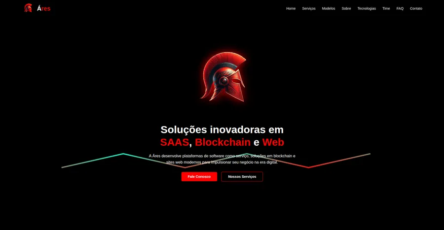
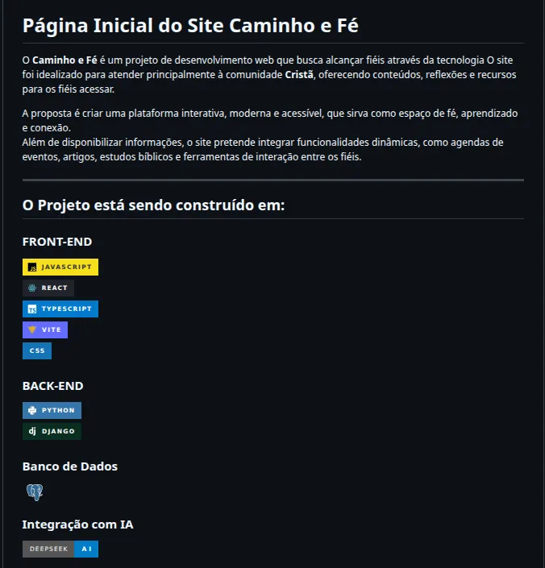
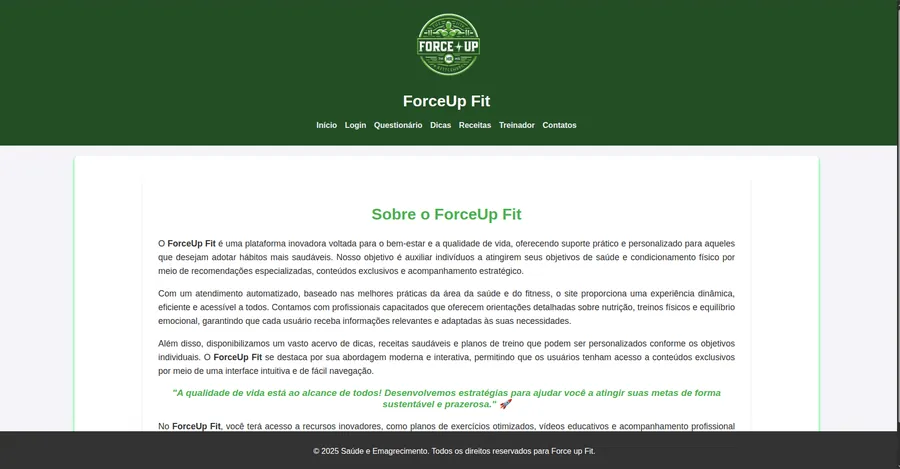
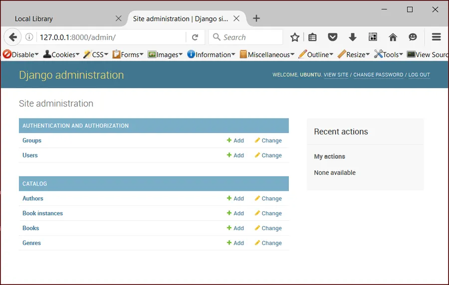
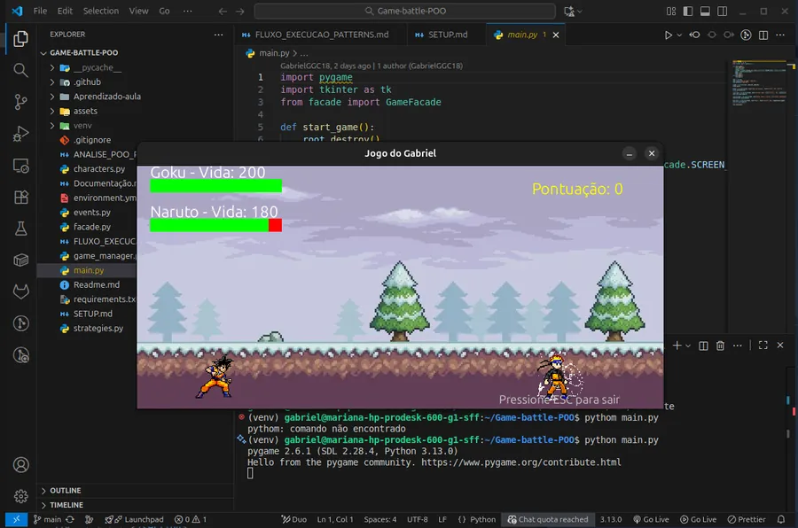

Backend
PythonDjangoDRFFastAPIJavaNode.js
disponível para oportunidades
CEO da Mídia Startup · Acadêmico de Engenharia de Software e Sistemas de Informação
Estagiário na Prefeitura de Palmas-TO
const gabriel = {
cargo: "Full Stack",
base: "Palmas · TO",
stack: ["Django", "React",
"FastAPI", "TS"],
agora: "ATOM Canvas",
cafe: Infinity,
};Olá! Me chamo Gabriel. Sou desenvolvedor fullstack e CEO da Mídia Startup, software house do Tocantins,, com foco em arquitetura de software, integração de sistemas e automações. Trabalho com Python (Django / FastAPI), JavaScript / TypeScript, React e PostgreSQL. Gosto de transformar processo manual em sistema — e de estudar o que ainda não sei.
Software house do Tocantins (ex-GSM Startup): sistemas web e SaaS, portais de notícias e automação com IA em Django e React. Do primeiro rascunho ao produto no ar, com suporte depois da entrega.
Portal de notícias do Tocantins: capa com destaques, editorias, SEO, tema claro e escuro e painel editorial próprio. Django + DRF na VPS com Nginx e site React na Vercel.
Esteira de redação com IA do Mídia 63: importa e reescreve notícias, gera os posts do Instagram e transforma lives em até 20 cortes 9:16 para Reels e Shorts. Nada vai ao ar sem aprovação humana.
Canvas infinito para orquestrar agentes de IA: terminais reais, notas e janelas lado a lado, com workspaces salvos. Roda local no Windows, Linux e macOS.
Sistema de gestão financeira em Python: controle de receitas, despesas e relatórios para operação do Mídia 63.
Agente pessoal de IA que orquestra sub-agentes e skills, gerencia memória persistente e roteia tarefas de desenvolvimento por domínio.
Estudo e construção de APIs REST com FastAPI: rotas assíncronas, Pydantic, versionamento e boas práticas de arquitetura.
Revisão e aprofundamento em POO com Java: herança, interfaces, coleções e exercícios de fixação de skills.
Sistema de gerenciamento de tickets para controle e acompanhamento de chamados.


Plataforma web voltada à fé católica, com conteúdos e recursos para a comunidade.



Jogo de luta em Python com conceitos de programação orientada a objetos.
Script Python que automatiza upload de fotos, vinculação como imagem destacada em posts e captura de screenshots via GitHub Actions.
Script Python para cadastro automatizado de serviços, otimizando processos administrativos e reduzindo trabalho manual.
Nenhum projeto com esse filtro.